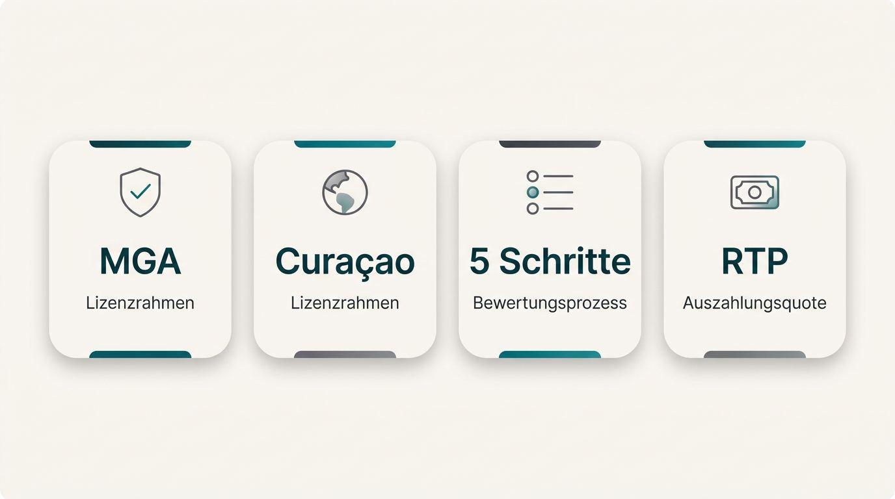
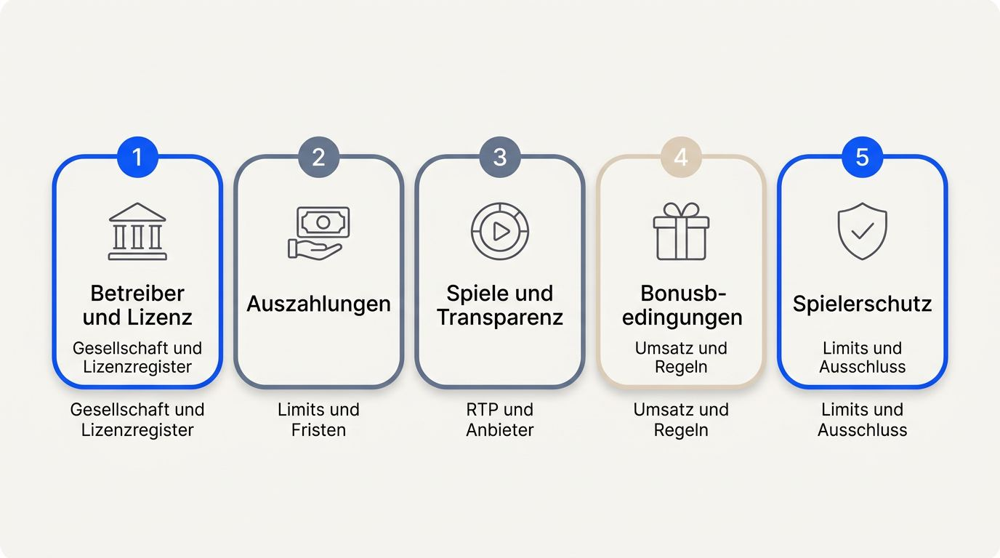
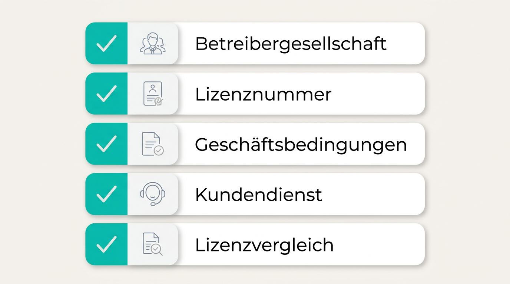
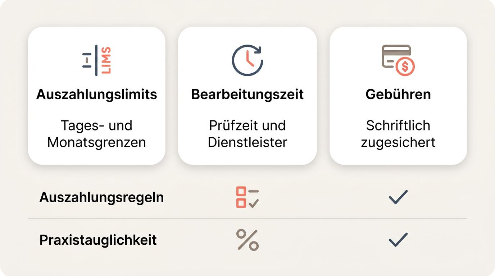
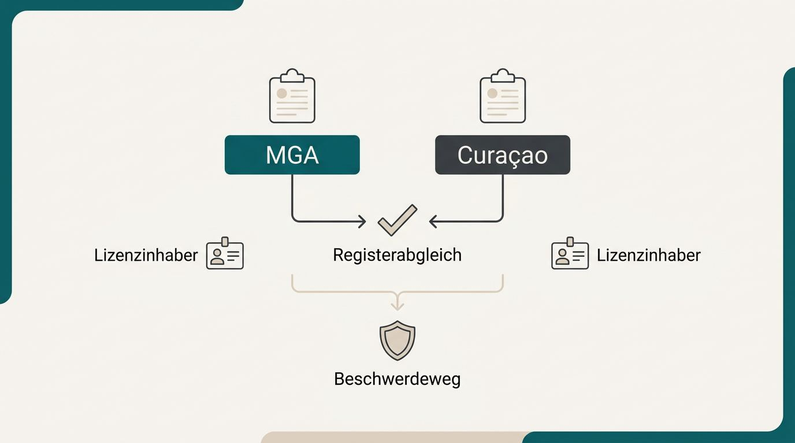

Sie möchten vor der ersten Einzahlung wissen, ob ein ausländisches Casino aus Deutschland nutzbar ist und Gewinne zuverlässig auszahlt. Bei ausländischen Casinos geben veröffentlichte Bedingungen und überprüfbare Angaben die belastbare Grundlage für Ihre Wahl. Prüfen Sie den Betreiber, bevor Sie Geld oder Ausweisdaten übermitteln. So wählen Sie ein Angebot, dessen Regeln auch bei einer Auszahlung nachvollziehbar bleiben.
So werden ausländische Casinos bewertet

Dieser Test ausländischer Casinos stützt sich auf Angaben, die Sie vor einer Einzahlung selbst kontrollieren können, statt auf Werbeaussagen oder hohe Bonusbeträge. Die Bewertung ausländischer Casinos gewichtet nachvollziehbare Nachweise in der Reihenfolge einer echten Entscheidung.
- Betreiber und Lizenz: Name der Gesellschaft, Lizenzregister und vollständige Bedingungen bilden die Grundlage, um seriöse ausländische Casinos einzuordnen.
- Auszahlungen: Veröffentlichte Limits, Fristen, Gebühren und Regeln zählen ebenso wie das Angebot selbst.
- Spiele und Transparenz: Anbieter, RTP-Angaben, Live-Angebot und Jackpotzugang müssen konkret sichtbar sein.
- Bonusbedingungen: Der mögliche Auszahlungswert zählt mehr als der beworbene Höchstbetrag.
- Spielerschutz: Freiwillige Limits, Sitzungshinweise und Selbstausschluss zeigen, welche Kontrollen Ihnen im Konto zur Verfügung stehen.
Lizenz und Transparenz des Betreibers

Ein internationales Casino gehört erst in die engere Auswahl, wenn Sie die verantwortliche Gesellschaft und die behauptete Lizenz unabhängig identifizieren können. Für den Vergleich einer ausländischen Casino-Lizenz sollten Sie den Online-Casino-Betreiber prüfen, bevor Sie Geld einzahlen.
- Betreibergesellschaft: Die Website nennt den vollständigen Unternehmensnamen, die Anschrift und eine Kontaktmöglichkeit.
- Lizenznummer: Prüfen Sie die veröffentlichte Nummer im offiziellen Register der Malta Gaming Authority oder der Curaçao Gaming Authority.
- Geschäftsbedingungen: Regeln zu Konto, Boni und Auszahlungen müssen vollständig erreichbar sein.
- Kundendienst: Testen Sie, ob Supportkanäle tatsächlich erreichbar sind und Fragen nachvollziehbar beantworten.
- Lizenzvergleich: Eine Lizenz ohne deutsche Lizenz ersetzt keine deutsche Lizenz, liefert aber überprüfbare Angaben zur verantwortlichen Gesellschaft.
Auszahlungsqualität für Deutschland

Ein hoher Bonus bringt wenig, wenn Limits, Bearbeitungszeit oder Regeln für die Auszahlung erst nach der Einzahlung sichtbar werden. Für eine schnelle Casino-Auszahlung zählt daher der dokumentierte Weg vom Auszahlungsantrag bis zum Eingang.
- Auszahlungslimits: Vergleichen Sie tägliche und monatliche Höchstbeträge, besonders wenn Sie größere Gewinne auszahlen möchten.
- Bearbeitungszeit: Trennen Sie die vom Casino angegebene Prüfzeit von der anschließenden Dauer des Zahlungsdienstleisters.
- Gebühren: Eine Casino-Auszahlung ohne Gebühren sollte schriftlich zugesichert sein, einschließlich möglicher Ausnahmen.
- Auszahlungsregeln: Lesen Sie Bedingungen zu Mindestbeträgen, Stornierungen und zulässigen Auszahlungswegen.
- Praxistauglichkeit: Transparente Regeln zeigen, ob ausländische Casino-Zahlungsmethoden für deutsche Konten und Zahlungswege nachvollziehbar nutzbar sind.
Spiele, RTP und Live-Casino-Angebot
Eine große Spielezahl sagt erst etwas aus, wenn Sie Anbieter, RTP-Werte und die tatsächliche Verfügbarkeit von Formaten prüfen können. Überprüfbare Produktdaten machen die Online-Casino-Spielauswahl aussagekräftiger.
- Softwareanbieter: Benannte Gaming-Studios zeigen, welche Produkte tatsächlich im Katalog stehen.
- RTP-Angaben: Sichtbare Werte auf Spielebene erleichtern den Vergleich einzelner Titel.
- Live-Casino: Prüfen Sie, ob ein Live-Casino aus dem Ausland für Ihr Konto verfügbar ist und welche Tische angeboten werden.
- Live-Dealer-Casino: Der Zugang zu Live-Dealer-Formaten sollte direkt im angemeldeten Bereich nachvollziehbar sein.
Bonuswert nach den Bedingungen
Der beworbene Bonusbetrag bildet nur den Ausgangspunkt, denn die Bedingungen entscheiden über den Betrag, der später auszahlbar werden kann. Ein Online-Casino-Bonus aus dem Ausland verdient daher eine Prüfung seiner tatsächlichen Nutzbarkeit.
- Umsatzvorgaben: Casino-Umsatzbedingungen legen fest, wie oft Bonus und teils auch Einzahlung umgesetzt werden müssen.
- Maximaleinsätze: Überschreiten Sie den erlaubten Einsatz, kann der Anbieter Bonusgewinne streichen.
- Spielbeiträge: Freispiele, Spielautomaten, Tischspiele und andere Kategorien können unterschiedlich stark zum Umsatz beitragen.
- Auszahlungslimits: Prüfen Sie, ob Bonusguthaben oder daraus erzielte Gewinne begrenzt auszahlbar sind.
- Bedingungen: Transparente Bonusbedingungen im Casino erlauben eine realistische Einschätzung des Gegenwerts.
Was ausländische Casinos ausmacht
Für Leser in Deutschland sind ausländische Casinos Online-Angebote, deren Glücksspielzulassung außerhalb Deutschlands erteilt wurde. Casinos im Ausland können sich bei Zugang, Produktauswahl und Zahlungsoptionen unterscheiden, weil der Betreiber Länderfreigaben und Kontofunktionen selbst festlegt. Die Vor- und Nachteile ausländischer Casinos zeigen sich daher bereits vor der Registrierung an der Verfügbarkeit des gewünschten Angebots.
Internationale Lizenz statt deutscher Lizenz
Eine internationale Lizenz identifiziert den Betreiber, ersetzt jedoch keine Zulassung der Gemeinsamen Glücksspielbehörde der Länder, kurz GGL. Ein Casino ohne deutsche Lizenz oder ein Online-Casino ohne deutsche Lizenz arbeitet unter einer außerhalb Deutschlands erteilten Erlaubnis. Die Lizenzdetails verknüpfen das Angebot mit der verantwortlichen Gesellschaft, während eine GGL-Lizenz einen anderen Zulassungsstatus beschreibt. Diese Abgrenzung gilt auch für Casinos ohne deutsche Genehmigung.
Größere Auswahl an Casinospielen
Eine breitere Auswahl hilft Ihnen vor allem dann, wenn Sie bestimmte Formate oder Softwareanbieter suchen, die in anderen Online-Angeboten fehlen. Für die Qualität ausländischer Spielbanken online ist entscheidend, ob die angebotenen Spiele zu Ihren eigenen Präferenzen passen.
- Spielautomaten: Sie können gezielt nach bestimmten Spielmechaniken, Themen oder Studios suchen.
- Tischspiele: Mehrere Varianten von Roulette, Blackjack oder Baccarat erweitern die Auswahl für Spieler mit festen Vorlieben.
- Live-Lobbys: Einige Casinos bieten umfangreichere Bereiche mit Live-Tischen und Spielshows.
Verfügbarkeit und Einschränkungen
Ob ein Ausland-Casino aus Deutschland nutzbar ist, entscheidet sich an Länderfreigabe, Zahlungsweg und Produktkonfiguration. Casino-Geoblocking kann einzelne Spiele, das gesamte Konto oder bestimmte Zahlungsmethoden betreffen. Erfahrungen anderer Nutzer mit ausländischen Casinos ersetzen diese Prüfung nicht. Kontrollieren Sie hier vor der Anmeldung, ob Registrierung, gewünschte Spiele und Zahlungsoptionen für Deutschland freigeschaltet sind.
Lizenzen und Sicherheitsprüfungen

Eine belastbare Vorauswahl verbindet Lizenznachweis, technische Kontosicherheit und belegbare Fairness. Wer ein Online-Casino auf Sicherheit prüfen will, sollte diese Felder getrennt betrachten und offizielle Register oder Zertifikate als Primärquellen nutzen. Auch Fairness bei Online-Casinos braucht mehr als eine bloße Behauptung auf der Startseite.
MGA- und Curaçao-Lizenzen prüfen
Die Malta Gaming Authority, kurz MGA, und die Lizenzierung aus Curaçao lassen sich über die Angaben zum Lizenzinhaber, einen Registerabgleich und dokumentierte Beschwerdewege vergleichen. Eine MGA-Lizenz oder CGA-Lizenz sagt Ihnen vor allem, welche Gesellschaft genannt wird, ob sich die Lizenzbehauptung bestätigen lässt und wo Sie bei einem Konflikt nach veröffentlichten Verfahren suchen können. Curaçao hat sein früheres System mit Master- und Sublizenzen bis 2024 modernisiert. Für seriöse ausländische Casinos zählt der aktuelle Registereintrag stärker als ein Lizenzlogo.
| Lizenzrahmen | Überprüfbare Merkmale | Praktischer Nutzen für Sie |
|---|---|---|
| Malta Gaming Authority | Lizenzinhaber, Lizenznummer und Unternehmensangaben im offiziellen Register | Sie können Betreiber und Lizenzbehauptung abgleichen. |
| Curaçao-Lizenzierung | Aktuelle Betreiberangaben, Lizenznummer und zuständiger Registereintrag | Sie erkennen, welche Gesellschaft für das Casinoangebot verantwortlich ist. |
| Beide Lizenzrahmen | Veröffentlichtes Beschwerdeverfahren, Regeln zu Auszahlungen und Spielergeldern | Sie sehen, ob ein dokumentierter Weg für Rückfragen oder Konflikte besteht. |
Sicherheit von Website und Konto
Bevor Sie Ausweis- oder Zahlungsdaten übermitteln, können Sie technische Mindestvorkehrungen und erreichbare Ansprechpartner in wenigen Minuten prüfen. Diese Merkmale helfen Ihnen, einen Online-Casino-Betreiber zu prüfen, ersetzen jedoch keine spätere Prüfung der Bedingungen.
- SSL-Verschlüsselung: Kontrollieren Sie die verschlüsselte Verbindung im Browser, bevor Sie persönliche Daten eingeben.
- Kontoschutz: Prüfen Sie, ob sichere Anmeldung und Zwei-Faktor-Authentifizierung verfügbar sind.
- Datenschutz: Lesen Sie, welche Daten der Anbieter speichert, verarbeitet und an Dritte weitergeben kann.
- Altersverifikation: Eine nachvollziehbare Altersprüfung zeigt, dass der Betreiber den Zugang zu Glücksspielkonten kontrolliert.
- Support: Nutzen Sie einen veröffentlichten Kontaktweg für eine konkrete Vorabfrage.
Fairness und RTP nachvollziehen
Fairness wird nachvollziehbar, wenn aktuelle Prüfnachweise, benannte Provider und RTP-Werte einzelner Spiele sichtbar sind. RTP bedeutet Return to Player und beschreibt die langfristige theoretische Auszahlungsquote eines Spiels. Der Wert verspricht kein individuelles Ergebnis beim Spielen, weil der Zufallszahlengenerator jede Runde unabhängig bestimmt. Ein Test ausländischer Casinos sollte Zertifikate daher von bloßen Aussagen über faire Spiele trennen.
Prüfen Sie diese Punkte vor dem Spielen:
- Liegt ein aktuelles Zertifikat einer unabhängigen Prüfstelle vor?
- Ist der Prüfumfang für Zufallszahlengeneratoren und Spiele klar beschrieben?
- Lässt sich ein Hinweis auf eCOGRA über aktuelle Nachweise überprüfen?
- Nennt das Casino die Softwareanbieter der verfügbaren Online-Casinos?
- Zeigt jedes Spiel seinen eigenen RTP-Wert beziehungsweise seine Auszahlungsquote an?
Boni bei ausländischen Casinos richtig bewerten
Beim Casino-Bonus zählt der Betrag, der nach Umsatzvorgaben und Auszahlungsbeschränkungen realistisch nutzbar bleibt. Diese Bewertung führt vom Willkommensbonus-Casino über laufende Boni bis zu den Regeln, die eine Auszahlung begrenzen können.
Willkommensbonus und Freispiele
Ein Willkommensangebot sollten Sie erst bewerten, wenn Teilnahmeberechtigung, Mindesteinzahlung und akzeptierte Zahlungsart feststehen. Die Bonusgutschrift bestätigt lediglich die Teilnahme, während die Bedingungen über die spätere Nutzung entscheiden.
- Einzahlungsbonus: Der Betreiber ergänzt Ihre erste Einzahlung nach einer vorgegebenen Quote und Obergrenze.
- Casino-Freispiele: Freispiele gelten häufig nur für bestimmte Spielautomaten und können eigene Umsatzvorgaben haben.
- Angebote ohne Einzahlung: Ein Bonus ohne Einzahlung kann an Identitätsprüfung, Länderfreigabe oder eingeschränkte Auszahlungen gebunden sein.
- Zahlungsarten: Prüfen Sie, ob Ihre gewählte Einzahlung überhaupt für den Willkommensbonus zugelassen ist.
Reload-Boni, Cashback und Treueprogramme
Wiederkehrende Aktionen schaffen langfristigen Gegenwert, wenn ihre Regeln verständlich bleiben und sich im üblichen Spielverhalten erfüllen lassen. Vergleichen Sie die Häufigkeit der Boni immer zusammen mit ihrer Berechnungsgrundlage und den Auszahlungsbedingungen.
- Casino-Reload-Bonus: Prüfen Sie, wie häufig der Bonus gilt, welche Einzahlung vorausgesetzt wird und ob Umsatzvorgaben gelten.
- Casino-Cashback: Achten Sie darauf, ob der Betreiber Verluste brutto oder netto berechnet und welche Spiele ausgeschlossen sind.
- Treueprogramme: Stufen und Vorteile sollten klar beschrieben sein, damit Sie deren Erreichbarkeit einschätzen können.
- Aktionsfrequenz: Viele sichtbare Angebote bieten keinen verlässlichen Vorteil, wenn Bedingungen oder Fristen unklar bleiben.
Bonusbedingungen vor der Annahme prüfen
Prüfen Sie die Bonusbedingungen im Casino stets in derselben Reihenfolge, bevor Sie einen Bonus aktivieren, denn jede Regel beeinflusst die spätere Auszahlung. Umsatzanforderungen sind die vorgeschriebenen Spieleinsätze, die Sie vor einer Auszahlung von Bonusguthaben erfüllen müssen.
- Umsatzmultiplikator: Prüfen Sie, wie oft Bonus und gegebenenfalls Einzahlung umgesetzt werden müssen, weil ein hoher Faktor den erforderlichen Einsatz erhöht.
- Spielbeiträge: Casino Freispiele und Spielautomaten können vollständig zählen, Tischspiele oft nur teilweise oder gar nicht. Das verlängert den Weg zur Auszahlung.
- Höchsteinsatz: Ein Einsatz über dem erlaubten Betrag kann dazu führen, dass Bonusgewinne verfallen.
- Ablaufdatum: Nach Fristende verfällt nicht umgesetztes Guthaben.
- Umwandlungsgrenze: Lesen Sie, welcher Betrag aus Bonusgewinnen maximal in Echtgeld umgewandelt werden darf.
Zahlungen und Auszahlungen nach Deutschland
Eine bequeme Einzahlung und eine verlässliche Auszahlung verlangen getrennte Prüfungen. Bei größeren Beträgen zählen veröffentlichte Auszahlungsregeln, limitschonende Wege und vollständige Kontohistorien stärker als ein schnelles Einzahlungssymbol. Ausländische Casino-Zahlungsmethoden müssen für deutsche Konten verfügbar sein und klare Nachweise für spätere Rückfragen liefern.
Einzahlungsmethoden und Währungen
Eine Zahlungsart passt nur, wenn sie aus Deutschland verfügbar ist, Gebühren offenlegt und mit Ihrer Kontowährung funktioniert. Prüfen Sie Casino-Währungen vor der ersten Einzahlung, besonders bei Umrechnungen. Die PSD2-Freigabe ist die Bankbestätigung, die viele Online-Karten- und Bankzahlungen per App, TAN oder biometrischer Prüfung verlangen.
| Zahlungsmethodenkategorie | Typische praktische Faktoren |
|---|---|
| Karten und bankbasierte Zahlungen | Verfügbarkeit, mögliche Einzahlungsgebühren, PSD2-Freigabe und Auszahlungskompatibilität prüfen. |
| SEPA-Überweisung | Kontoinhaber, Bearbeitungsweg, Referenzangaben und unterstützte Währung müssen passen. |
| E-Wallets | Verfügbarkeit im deutschen Konto, Gebühren sowie derselbe Weg für Ein- und Auszahlung sind relevant. |
| Kryptowährungen | Casino-Kryptowährungen können angeboten werden. Prüfen Sie Netzwerkgebühren, Wechselkursrisiken, Wallet-Adresse und die Auszahlungsbedingungen getrennt. |
Auszahlungszeiten, Limits und Gebühren
Für eine schnelle Casino-Auszahlung zählt, wann der Gewinn nach dem Antrag tatsächlich verfügbar wird. Eine Bewertung ausländischer Casinos sollte deshalb die gesamte Auszahlungskette prüfen.
- Prüfzeit des Casinos: Die Wartezeit vor Freigabe des Auftrags unterscheidet sich von der Bearbeitung durch den Zahlungsdienstleister.
- Auszahlungslimits: Tages- und Monatsgrenzen bestimmen, ob größere Gewinne in mehreren Schritten ausgezahlt werden müssen.
- Gebühren: Eine Casino-Auszahlung ohne Gebühren muss auch für den gewählten Auszahlungsweg und Betrag gelten.
- Stornierung: Prüfen Sie, ob Sie einen Auszahlungsauftrag zurücknehmen können und welche Folgen das für die Bearbeitungszeit hat.
KYC vor einer hohen Auszahlung
Know Your Customer, kurz KYC, ist eine übliche Identitätsprüfung, die eine Auszahlung verzögern kann, wenn Angaben oder Dokumente nicht zum Konto passen. Erledigen Sie verfügbare Casino-KYC-Prüfungen frühzeitig, bevor Sie auf einen schnellen Cashout angewiesen sind. Die Prüfung dient auch der Geldwäscheprävention.
- Ausweisdokument: Reisepass oder Personalausweis müssen Name und Geburtsdatum des Kontos bestätigen.
- Adressnachweis: Eine aktuelle Rechnung oder ein Kontoauszug kann die hinterlegte Wohnanschrift belegen.
- Zahlungsmittelnachweis: Der Betreiber kann einen Nachweis verlangen, dass Karte, Bankkonto oder Wallet Ihnen gehören.
- Herkunft der Mittel: Bei ungewöhnlich hohen Transaktionen können zusätzliche Nachweise zur Herkunft des Geldes erforderlich sein.
Fragen der Bank nach größeren Casino-Auszahlungen
Deutsche Banken können bei größeren Casinoeingängen Nachweise zur Herkunft des Geldes anfordern. Transparente Casinos für Spieler in Deutschland erleichtern diese Erklärung durch abrufbare Kontodaten und eindeutige Zahlungsbelege. Eine Prüfung nach dem Geldwäschegesetz bedeutet weder automatisch Fehlverhalten noch, dass Sie Glücksspielgewinne versteuern müssen.
Halten Sie für mögliche Rückfragen folgende Unterlagen bereit:
- Kontoauszug oder Kontohistorie des Casinos
- Bestätigung der Einzahlung und des verwendeten Zahlungswegs
- Auszahlungsbestätigung mit Betrag und Datum
- Bankauszug über den Zahlungseingang
- KYC-Bestätigung, sofern verfügbar
Spiele, Software und Live-Casino
Sie können eine breite Online-Casino-Spielauswahl anhand verfügbarer Formate, bekannter Softwareanbieter und sichtbarer Produktdaten beurteilen. Internationale Online-Casinos können verschiedene Spielarten anbieten. Entscheidend bleibt, was in Ihrem Konto aus Deutschland tatsächlich freigeschaltet ist.
Spielautomaten, Tischspiele und Jackpots
Ein Katalog passt zu Ihnen, wenn er die Spielformate enthält, die Sie spielen möchten, statt nur eine hohe Gesamtzahl auszuweisen. Ausländische Spielbanken online unterscheiden sich dabei vor allem nach tatsächlicher Verfügbarkeit.
- Spielautomaten: Prüfen Sie Themen, Mechaniken und verfügbare Varianten innerhalb der Slot-Auswahl.
- Tischspiele: Roulette, Blackjack und Baccarat bedienen andere Präferenzen als digitale Automatenspiele.
- Spielshows: Interaktive Formate können eine eigene Kategorie neben klassischen Tischspielen bilden.
- Progressive Jackpots: Online-Casino-Jackpots können auf gemeinsamen Gewinnpools beruhen und je nach Markt unterschiedlich verfügbar sein.
Softwareanbieter und RTP-Transparenz
Namentlich erkennbare Provider und sichtbare RTP-Werte je Spiel liefern mehr Vergleichswert als allgemeine Qualitätsaussagen. Ein Demomodus kann, sofern verfügbar, Funktionen vor dem Spielen mit Echtgeld zeigen. Diese Angaben unterstützen die Fairness bei Online-Casinos auf Produktebene.
Verfügbarkeit von Live-Casinos
Ein Live-Casino aus dem Ausland eignet sich für Sie, wenn Sie Tischspiele mit Echtzeit-Dealern gegenüber digitalen Varianten bevorzugen. Prüfen Sie den Zugang nach der Anmeldung, denn Casino-Geoblocking und Betreiberpolitik können einzelne Tische ausschließen.
- Live-Roulette und Blackjack: Verfügbarkeit und Einsatzbereiche können je Studio abweichen.
- Baccarat: Dieses Format ist in manchen Live-Dealer-Casino-Lobbys verfügbar.
- Spielshow-Tische: Live-Formate mit zusätzlichen Spielelementen stehen oft separat in der Lobby.
- Studiozugang: Einzelne Live-Tische können abhängig von Standort und Länderfreigabe fehlen.
Tools für verantwortungsvolles Spielen
Spielerschutz bei ausländischen Casinos zeigt sich an Kontofunktionen, die Sie vor der Einzahlung leicht finden und direkt aktivieren können. Verantwortungsvolles Spielen im Online-Casino umfasst persönliche Limits, Ausschlussmöglichkeiten und abrufbare Kontodaten. Diese Werkzeuge gehören neben Bonuswert und Spielauswahl in den Vergleich.
Limits und Sitzungskontrollen
Wirksame Kontrollen helfen Ihnen, persönliche Grenzen vor oder während des Spielens festzulegen. Prüfen Sie, ob der Bereich im Konto ohne Umwege erreichbar ist.
- Einzahlungslimit: Legt fest, wie viel Sie innerhalb eines gewählten Zeitraums einzahlen können.
- Verlustlimit: Begrenzt den Betrag, den Sie in einem Zeitraum verlieren können.
- Zeitlimit und Reality Check: Sitzungserinnerungen zeigen die bisherige Spielzeit oder regen zu einer Pause an.
- Abkühlphase: Eine vorübergehende Sperre unterbricht den Zugang für den gewählten Zeitraum.
Ein Casino ohne OASIS-Anbindung bietet keine automatische Verbindung zum OASIS-Spielersperrsystem. Prüfen Sie daher die eigenen Kontowerkzeuge besonders genau.
Selbstausschluss und Kontoschließung
Optionen für Selbstausschluss und Kontoschließung sollten sichtbar sein, bevor Sie sich bei einem Betreiber anmelden. Selbstausschluss bedeutet, dass Sie als Spieler eine zeitweise oder dauerhafte Sperre des eigenen Kontos verlangen.
- Zeitweiser Ausschluss: Das Konto bleibt für den beantragten Zeitraum gesperrt.
- Dauerhafter Ausschluss: Der Betreiber beendet den Zugang dauerhaft nach seinen veröffentlichten Regeln.
- Kontoschließung: Ein klarer Weg zur Schließung sollte im Konto oder über den Support verfügbar sein.
- Supportkontakt: Für Einschränkungswünsche muss ein erreichbarer Kontaktweg bestehen.
Transaktions- und Spielverlauf
Zugängliche Kontoaufzeichnungen unterstützen Ihre eigene Übersicht beim Spielen und dokumentieren Geldbewegungen nachvollziehbar. Erfahrungen anderer Nutzer mit ausländischen Casinos ersetzen keine eigenen, abrufbaren Daten im Konto.
- Einzahlungsverlauf mit Beträgen und Zahlungswegen
- Auszahlungsverlauf mit Antrags- und Bearbeitungsstatus
- Spielverlauf zur Kontrolle der eigenen Aktivität
- Herunterladbare Kontoaufzeichnungen, sofern der Betreiber diese anbietet
Sind ausländische Casinos in Deutschland legal?
International lizenzierte Casinos sind nicht mit GGL-lizenzierten Online-Casinos gleichzusetzen. Für Personen mit Wohnsitz in Deutschland zählen vor der Nutzung vor allem tatsächlicher Zugang, Kontobedingungen und mögliche Zahlungsfolgen. Die Gemeinsame Glücksspielbehörde der Länder setzt den Glücksspielstaatsvertrag durch und geht nach eigenen Angaben verstärkt gegen nicht lizenzierte Angebote sowie gegen Werbung und Streaming für deutsche Nutzer vor.
Steuergrundsatz: Deutscher Wohnsitz und die Art des Spiels bestimmen die allgemeine Steuerposition.
Private Gewinne aus Freizeitglücksspiel sind in Deutschland grundsätzlich nicht einkommensteuerpflichtig. Regelmäßige professionelle Glücksspielaktivität kann anders behandelt werden. Bundesfinanzhof und Einkommensteuergesetz bilden dafür den rechtlichen Kontext, ersetzen jedoch keine individuelle Beratung.
- Prüfen Sie bei Streamer- oder Influencerwerbung Lizenzangaben und den tatsächlichen Zugang aus Deutschland.
- Ein Casino ohne 5 Sekunden Regel beschreibt eine Produktgestaltung, sagt aber nichts über Zugang oder Auszahlungsbedingungen aus.
- Ein Virtual Private Network, kurz VPN, kann Casino-AGB verletzen und Kontozugang oder Auszahlung gefährden.
- Bei erheblichen Zahlungen aus Nicht-EU-Casinoarrangements können zusätzliche Dokumentations- oder Meldefragen entstehen.
- Holen Sie bei hohen, ungewöhnlichen oder möglicherweise professionellen Aktivitäten qualifizierten Steuer- oder Rechtsrat ein.
Häufige Fragen zu ausländischen Casinos in Deutschland
Diese Fragen ergänzen die Liste ausländischer Casinos um praktische Einzelfälle zu Auszahlung, Spielinformationen und Kontoschließung.
Was sollte ich tun, wenn ein Casino meine Auszahlung ablehnt?
Fordern Sie den Ablehnungsgrund und die einschlägigen Bedingungen schriftlich an. Sichern Sie KYC-, Konto- und Zahlungsnachweise und nutzen Sie bei bestätigter Lizenz den veröffentlichten Beschwerdeweg.
Warum kann der RTP eines Spiels je nach Version unterschiedlich sein?
Provider können für verschiedene Betreiber oder Märkte unterschiedliche RTP-Konfigurationen bereitstellen. Prüfen Sie den RTP in der konkret verfügbaren Spielversion, denn er beschreibt nur einen langfristigen theoretischen Rücklauf.
Was passiert mit offenen Boni, wenn ich mein Casino-Konto schließen lasse?
Offene Boni verfallen oder werden nach den Bonusbedingungen des Casinos nicht mehr nutzbar. Prüfen Sie Echtgeld und ausstehende Auszahlungen getrennt und kontaktieren Sie bei Unklarheiten den Support schriftlich.